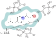
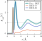
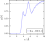
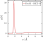
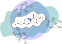
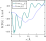

Concepts
Why Minimum-Distance Distribution Functions?
Traditional radial distribution functions (RDFs) describe the density of molecules as a function of the distance from a reference point, typically the center of mass of a solute molecule. While RDFs are well suited for simple, roughly spherical molecules, they become difficult to interpret when the solute (or the solvent) has a complex, anisotropic shape — which is the case for proteins, nucleic acids, polymers, lipids, and many drug-like molecules.
The fundamental issue is that molecular interactions occur between atoms at the molecular surface, not between centers of mass. For an elongated or irregularly shaped molecule, the center-of-mass distance is a poor proxy for the actual distance at which intermolecular interactions take place.
Minimum-Distance Distribution Functions (MDDFs) solve this problem by computing the distribution of the minimum distance between any atom of the solute and any atom of the solvent. This definition naturally accounts for the size and shape of the molecules involved, providing a distribution function that:
- Peaks at distances directly associated with molecular interactions (e.g., hydrogen bonds at ~1.9 Å, van der Waals contacts at ~3.5 Å).
- Can be decomposed into the contributions of individual atoms or chemical groups, enabling a detailed chemical interpretation of solvation.
- Converges to the bulk density at shorter distances than RDFs, because the molecular shape of the solute is already accounted for.
MDDFs vs. RDFs: an illustrative comparison
The figure below sketches the regions of space considered in the computation of MDDFs and RDFs around an anisotropic molecule (Ibuprofen, with ~12 Å maximum length). The MDDF counts solvent molecules based on their closest distance to any solute atom, while the RDF counts molecules based on their distance to a single reference point (e.g., the center of mass).

Minimum-Distance Distribution Function
The MDDF of betaine relative to Ibuprofen reveals two clearly resolved peaks: a hydrogen-bonding interaction at ~1.9 Å and non-specific contacts peaking at ~3.5 Å. Crucially, decomposing the MDDF into atomic contributions directly associates these peaks with specific chemical groups — polar oxygen atoms and aliphatic hydrogens, respectively. This chemical decomposition is a natural and powerful feature of minimum-distance distribution functions.

Radial Distribution Functions
In contrast, the standard RDF computed from a betaine oxygen to the center of mass of Ibuprofen (below, left) does not show peaks at hydrogen-bonding or contact distances. The peak positions are shifted to larger, non-informative distances because of the volume and shape of the solute molecule. To detect the hydrogen bond, one would need to compute a specific atom–atom RDF (below, right), which requires prior knowledge of which interaction to look for — defeating the purpose of an exploratory analysis.


The peak height differences between the MDDF and the RDFs arise from the different reference volumes used to normalize each distribution.
Kirkwood-Buff integrals and convergence
Kirkwood-Buff (KB) integrals quantify the total excess (or deficit) of solvent molecules in the vicinity of a solute, relative to an ideal solution. They connect the molecular-level solvation structure to macroscopic thermodynamic properties such as preferential solvation, partial molar volumes, and activity coefficients. KB integrals are defined as integrals of the distribution function over all space and, in principle, must converge to the same value whether computed from MDDFs or RDFs.
In practice, however, the distances required for convergence differ substantially. The sketch below illustrates why: the "solute domain" — the region around the solute that is distinct from the bulk solution — has a very different shape depending on whether it is defined by minimum distances (green) or radial distances (purple). For an elongated molecule, a large isotropic radial distance is needed before the bulk solution is reached in all directions, while the minimum-distance definition reaches the bulk at shorter distances because it already accounts for the molecular shape.

This difference in convergence is illustrated in the KB integral plot below. The KB integral computed from the MDDF begins to oscillate around its converged value at about 15 Å, indicating that the bulk solution has been reached. The KB integral computed from the RDF, on the other hand, fails to converge within the same distance range, because along the longer axis of the solute the bulk region has not yet been reached.

Faster convergence of KB integrals is not only more convenient — it is essential for obtaining reliable thermodynamic data from finite-size molecular dynamics simulations, where the simulation box imposes a practical upper limit on the distances that can be probed.
How ComplexMixtures.jl uses these concepts
The ComplexMixtures.jl package implements the computation of MDDFs and KB integrals from molecular dynamics trajectories, providing:
Shape-independent solvation structure: MDDFs that reveal the solvation shell structure regardless of solute size or geometry. See Computing the MDDF and Results.
Atomic and group decomposition: natural decomposition of the MDDF into the contributions of individual atoms or chemical groups of both solute and solvent, enabling a detailed chemical interpretation of solvation. See Atomic and group contributions.
Reliable KB integrals: KB integrals that converge at shorter distances compared to RDF-based computations, yielding more robust thermodynamic data from standard simulation box sizes. See Results.
Density maps: two-dimensional representations of solvent density around each residue of macromolecules, connecting structure and solvation at the residue level. See Density maps.
These tools make ComplexMixtures.jl particularly well suited for studying the solvation of complex-shaped molecules — proteins, polymers, membranes, and mixtures of molecules with non-trivial geometries — from a molecular perspective grounded in rigorous statistical mechanics.